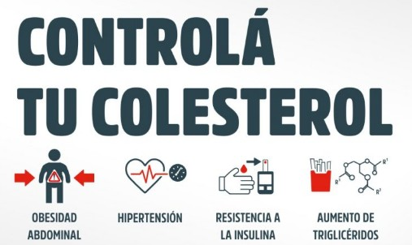

Hacer ejercicio regularmente ayuda a aumentar el colesterol bueno (HDL) y disminuir el colesterol malo (LDL). Actividades como caminar, correr, nadar o andar en bicicleta contribuyen a mantener una buena salud cardiovascular.
Es importante realizar chequeos médicos periódicos para conocer los niveles de colesterol en la sangre. Un diagnóstico temprano permite tomar medidas preventivas y reducir el riesgo de enfermedades cardiovasculares.
